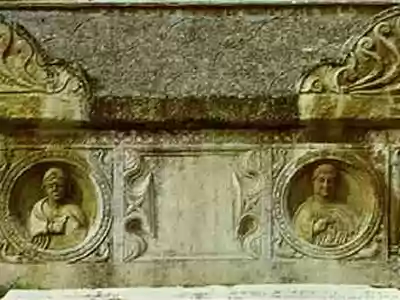

SRBIJA
Sirmium, jedan od najvažnijih gradova kasnog Rimskog carstva, nalazio se pored reke Save, na području današnje Sremske Mitrovice. Osnovan u 1. veku,
Sirmijum je svoj vrhunac doživeo 294. kada je bio proglašen jednom od četiri prestonice Rimskog carstva.
Sistem puteva, akvadukata i vojnih utvrđenja, ostaci carske palate, termi, pozorišta, hipodroma, pokazuju da je ovaj grad bio centar (legijski logor,
carski grad i episkopski centar) čitave oblasti – tadašnje rimske provincije Panonije. U to vreme ovo je bio jedan od važnih trgovačkih i tranzitnih
centara Carstva. U gradu i njegovoj okolini rođeno je šest rimskih imperatora.

Konstantin Veliki je proveo duže vreme sa svojom porodicom u Sirmijumu. U njemu je proslavio petnaestogodišnjicu svoje vladavine. U purpuru carske
palate rođen je njegov sin Konstancije II, a njastariji sin Krisip je proslavio svoje venčanje. Konstantin Veliki je jedno vreme planirao da Sirmijum
postane novo sedište Rimskog carstva, pre nego što je počeo graditi Vizant (Konstantinopolj).
Kasnije, Sirimijum postaje jedno od središta ranog hrišćanstva, ali i mesto stradanja hrišćanskih mučenika. O ovome svedoče dobro očuvani ostaci
hrišćanske bazilike u samom centru grada. Na Žitnom trgu, na ostacima zanatske četvrti iz Rimskog doba, svake godine – tokom juna meseca, održava se
Festival besedništva, u spomen na antičku slavu ovog grada. Krajem 4. veka, Sirmijum je podelio sudbinu celog Carstva. Prodorom Huna, Gota i Gepida,
grad je uništen, raseljen.
Vizitorski centar kompleksa „Carske palate“ u Sremskoj Mitrovici otvoren je od ponedeljka do petka, od 09.00 do 17.00.